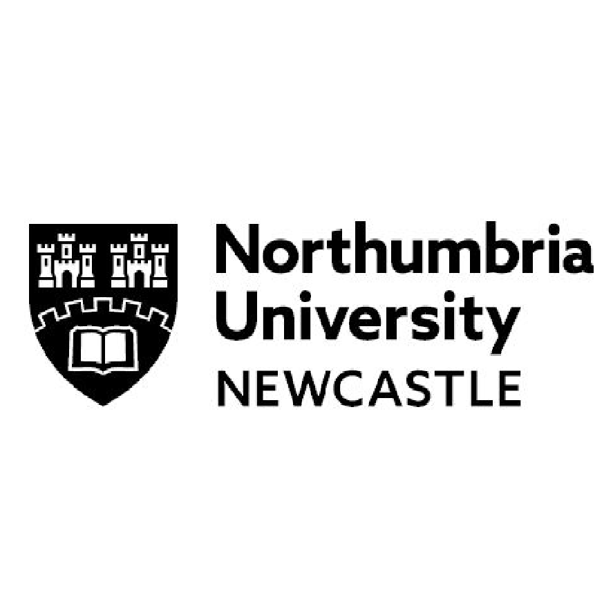
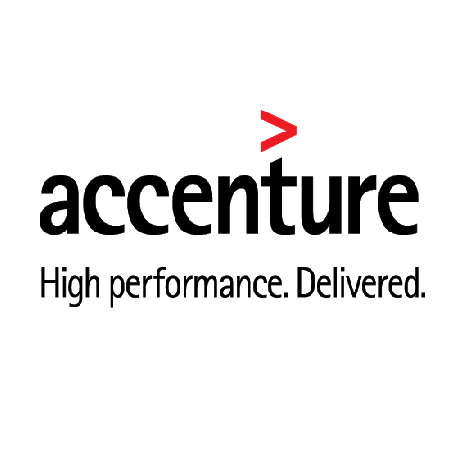

Hello World 🌏!
I'm Edwin Tan, a graduate student 🎓 from the University of Sheffield.
~ A little more about me ~
(c) 2019 Microsoft Corporation. All rights reserved.
C:\Users\Edwin Tan>birth -origin
-> "Penang, Malaysia"
C:\Users\Edwin Tan>recent -education
-> "University of Sheffield"
C:\Users\Edwin Tan>major
-> "Masters in Computer Science (SSIT)"
C:\Users\Edwin Tan>expected -graduation
-> "Jan 2020"
C:\Users\Edwin Tan>interest
-> ["Code", "Tennis", "Badminton", "Coffee", "Travelling"]
C:\Users\Edwin Tan>latest -work -experience
-> Latest Work Experience
company: "Shopee SG"
position: "Features + Business Intelligence, Regional Marketing"
startDate: "Aug 2020"
endDate: "Present"
C:\Users\Edwin Tan>resume -download
-> "Edwin_Tan_CV.pdf"
C:\Users\Edwin Tan>contact -email
-> "edwin.tan.yi.xian@gmail.com"
~ Resume ~
Education 👨🎓
University of Sheffield
2018-2020
Computer Science (SSIT), MSc
Sheffield, United Kingdom

Northumbria University
2015-2016
Electronic Design Engineering, BEng
Newcastle Upon Tyne, United Kingdom
Work Experience 💼

Accenture
Sept 2017-Sept 2018
Technology Analyst - Communication/Media/Technology Section
Kuala Lumpur, Malaysia
Involved in digitizing legacy billing system in Telekom Malaysia from paper to electronic bills (e-Bill
Telekom). Besides that,
I was also responsible for delivering technical designs in Siebel Applications (CRM). Having knowledge in CRM,
I also worked on
implementing some of Telekom's services using salesforce.
Accenture
Sept 2016 - Feb 2017
Analyst (Intern)
Kuala Lumpur, Malaysia
Aided in a massive project for Telekom Malaysia (Malaysia's Largest Telecommunications Provider) by performing
end to end testing
for a major product enhancement. Additionally, I also carried out end to end training to our client-users
regarding the newly
enhanced product.
~ Some Things I've Built ~
{kind=link}
Dota Analyst
As fulfillment of my final dissertation project, I have
ventured into the world of E-sports by building
an Alexa skill that could provide interesting and relevant up to date information related to the game Dota 2
such as match schedules, results, and team achievements.
Furthermore, this Alexa skill was specially built to provide predictions for Dota 2 matches related to "The
Internationals 2019" using the core concept of machine learning technologies such as scikit-learn as well
as serverless platform
involving AWS Lambda and DynamoDB. This project was truly challenging and rewarding as the final outcome was
realised in the publication of this skill in the Amazon Skills Store.
Indeed, the Dota Analyst has made its little contribution to the amazing world of digital tech in which
application like this can be made available in the Alexa powered smart speakers like the Amazon Echos.
{kind=link}
Pi Wars
This is a web application that was specially designed to handle
the management of results for the Pi Wars Robotics competition. Prior to this, such competitions
were manually tabulated using paper and pen, hence this application serves to provide an interactive
platform that could manage the tabulation of results more accurately and effectively.
In this project, our team members worked collaboratively through different stages of the software
lifecycle development from client interviews, requirements capture, analysis and design to implementation
and testing.
{kind=link}
Hire Me
This is a web application that provides job listings similar to
RatedPeople.com and indeed.co.uk which aims to assist job seekers and head hunters.
In this project module, a client server architecture was built to facilitate a more effective job search
engine using multiple web technologies such as Express/Node.js, AJAX communication and a JSON data
exchange format.